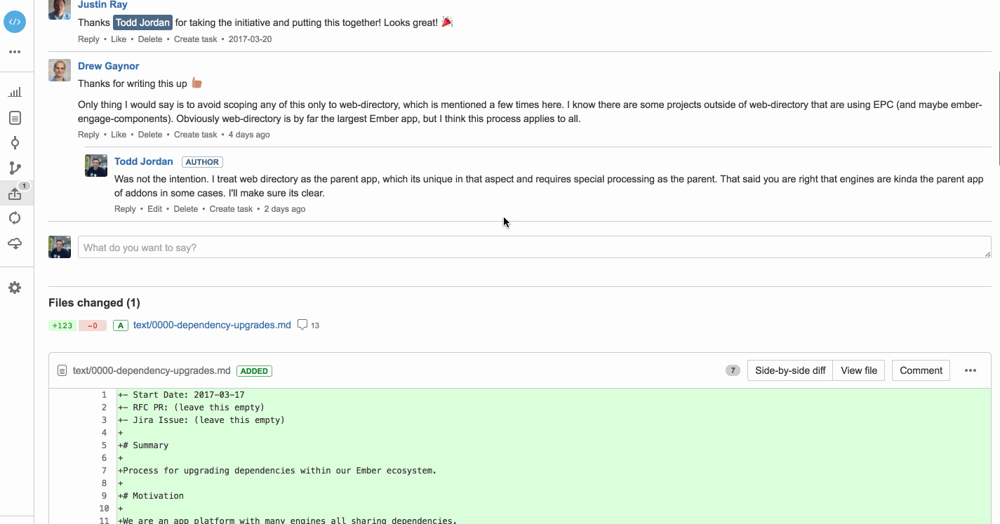
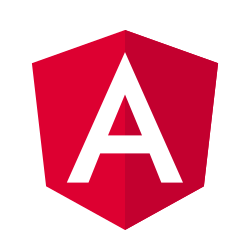
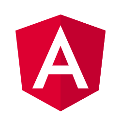

Engines as an Application Platform
Decisions in Scaling Ember Development
## Application Platform
* Today I'm going to talk to you guys about using ember engines as an application platform and the tough decisions that are going to enivitably pop up when undertaking this.
* Will largely draw upon the experiences we've had using engines to build this out.
Application Platform
A Collection of Separate Apps
Tied together by a single cohesive user experience.
Sharing common assets
At the same time
Maintaining separate business goals
Releasing on their own schedules
Having their own internal practices/standards
* Let's start with a definition so we are all on the same page.
* Common Assets, such as services (intl, perm), components (data grids, menus), assets (icons, styles)
* We have this situation at Genesys
Engines Made Ember Win In My Company
Autonomy/Accountability
Namespacing
Asset Sharing
Lazy Loading
Technical Consistency
This is stuff you get with Engines out of the box.
But Winning Was Just the Beginning of Our Story...
And that's what we are going to talk about today
About Me
Senior Dev at Genesys
Ember Learn Team
Triangle Ember Meetup Organizer
About Our Ember App
https://vimeo.com/174421457
Describe briefly our story.
Cloud Based Customer Service Software
Started as a very small startup doing Ember
Acquired by a medium sized company doing Angular and Knockout
We were a cloud based Directory Integrator app with realtime collaboration
They had a app suite of customer service software
Orgspan pre Ember 1.0
The Genesys PureCloud Application Platform
The same app exists today, but has become the UI shell to our whole customer service product suite.
Top menu items are routable
Side menu items are built-in
The top menu is routable apps (engines)
While the side menu are capabilities you have built into the platform
Some Stats
50+ Ember Developers
10 Engines (and counting!)
2-4 Deployments/Month
But...
How did we get there?
### Engines get you on the road to doing it well,
but you still have to figure some things out as a UI organization.
How To Avoid Breaking Each Other?
### The crux of most of our technical challenges
Managing Dependencies
One of the biggest causes of breakages when we brought everyone together under one UI.
Semantic Versioning + Communication = Love
...or at least not killing each other
http://semver.org
### Many developers don't give it much thought when creating standalone apps.
* http://semver.org
Prefer `^` for dependencies (Except Ember)
Lint your dependencies - ember-cli-dependency-lint
Major dependency bumps propagate up, that way the parent is in control
Make addon dependencies public
Mind your broccoli (Who's my parent?)
* We always want the parent to be in control to avoid breaks from children.
* Making addon dependecies public prevent the parent from having to explicitly depend on child dependencies
* Ember CLI treeFor tasks can't assume an NPM Tree. When new dependencies and engines get added it can change the whole tree.
Upgrading Ember
* No big deal on a minor, right?
* Upgrading's a big deal when you have a ton of engines that need to be in sync
Keep an Ember Upgrade Branch
Engines should run ember-try against release and beta (at least)
Gated by tests
Approvals from Engine Owners
We're realizing that keeping up with the beta can make Ember more semver compliant
How Do We Test?
## A Few Options
* You can Push as much as possible to individual Engines
* You can put everything at the top level
* You can do a mix... Acceptance-Top, unit/integration at engines.
Push Tests To Engines and Addons
Distributes load
Keeps teams accountable
Gates Builds/Version Bumps
Requires some kind of accomodation for shared services.
How Do We Share?
Common Addons
How to "Share Up" less/sass common variables(blog post?)
Single vs Separate
Services - you can share services from the parent, but you lose out on testing locally that way
Common Addons
Components - Assets - Services
Prefer common to shared
### Reasons we prefer common
* Tests
* Main app simplicity
* broader reuse
Splitting Addons
Modularity vs Simplicity
Public Addons
ember-webrtc-devices
ember-webrtc-troubleshoot
ember-data-visualizations
fixtable-ember
Suites
ember-purecloud-components
ember-engage-components
### The tradeoff in splitting addons
* few, large addons are simpler for consumers to keep up with, require less dependency concerns
* many, small addons promote easier maintenance and fine grained reuse.
### Public Addons
* We want public addons to be fine grained, bc we don't know how people will want to use them.
* Gives them a more consumable face.
### Major Addons
* Have their own teams maintaining them. May be used outside the main app.
### Suites
* "Everything else"
* Makes thing shared across the ecosystem
* Simplifies dependency management
How Do We Build and Deploy?
Each Engine/Addon/App should have its Own
GitFlow
feature branch
develop
release - yarn-locked
master - ship
Branch Deployments
Each Major Branch gets deployed (release, develop, features)
Engine branches get deployed for tests
Ship: NPM Publish for Engines
Ship: S3 Prod Deploy for App Master
Automation Gates Promotion
Ember suite breaks builds
E2E automation gates app to prod
E2E automation gates engine to publish
### GitFlow
http://nvie.com/posts/a-successful-git-branching-model/
What are the Next Decisions?
Patching Engines
Managing Size
Ease of Deployment
Third Party Apps
Managing Outages
How Do We Communicate Across Diverse, Global Teams?
EmberJS Chat Channel
* Each Team has their own channel
* Every team is on the EmberJS Channel
Always Answer Questions
Share Links and New Stuff
Pitch Ideas
Garner Reviews
Gifs
We want nobody to be on an island
### Topics So Far
* Components
* Addon Development
* Engines
* Testing
* Ember Data
* NPM and Semver
* Build and Deploy
* The Run Loop
Internal RFC Process
Ripped from Ember <3

* Document
* Publicize
* Buy-in
### Things We Use it For
* New Best Practices _(Testing, Upgrades)_
* New Tooling _(introducing mirage, concurrency, etc)_
Documentation of APIs, Usage
Inspired from last EmberConf \o/
Creating a Contribution Culture
Core Team
Task Board
Detailed Tasks
Help Wanted Tags
* Learned some tips from my OSS Experience
* Not going to get 100%, but make it easier for people that are motivated
* Senior engineers set the tone
* Continuous Delivery helps
 
